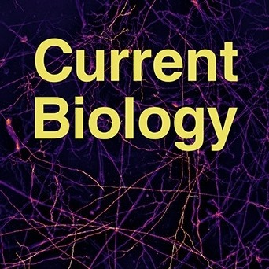

Yimin Wang
School of Computer Engineering and Science 99 Shangda Road About | Publications | CV | Google Scholar | ORCID |
About
Yimin Wang (王宜敏) is currently with the School of Computer Engineering and Science, Shanghai University. He is also an Adjunct PI at the Institute for Brain and Intelligence (BrainTell) of Southeast University, leading the group of software tools. As a computational neuroscientist, his current research goals include 1) exploring the brain anatomical structures at single-cell level with the assistance of various techniques such as immersive visualization, image computing, machine intelligence-based analysis, etc. and 2) answering biological questions such as how many cell types are there in a certain brain region, how cells connect together to form circuits, etc. Previously, he has also worked at IBM Research - China.
Recently he developed TeraVR, a virtual reality-based tool that can be used for the immersive, collaborative, and interactive annotation of neuronal morphologies from light microscopy imaging data. With TeraVR, a number of major global brain initiatives are now producing some of the most complete neuron morphology data at an unprecedented efficiency.
Publications
Find more recent publications at Google Scholar.
Petabyte-Scale Multi-Morphometry of Single Neurons for Whole Brains |
|
|
Cross-Modality Coherent Registration of Whole Mouse Brains |
|
|
Morphological diversity of single neurons in molecularly defined cell types |
|
|
A multimodal cell census and atlas of the mammalian primary motor cortex |
|
|
Cellular Anatomy of the Mouse Primary Motor Cortex |
|  | Binocular encoding in the damselfly pre-motor target tracking system |
![[Cover picture]](files/cb2020/cover.jpg){kind=link}
|
|
TeraVR Empowers Precise Reconstruction of Complete 3-D Neuronal Morphology in the Whole Brain |